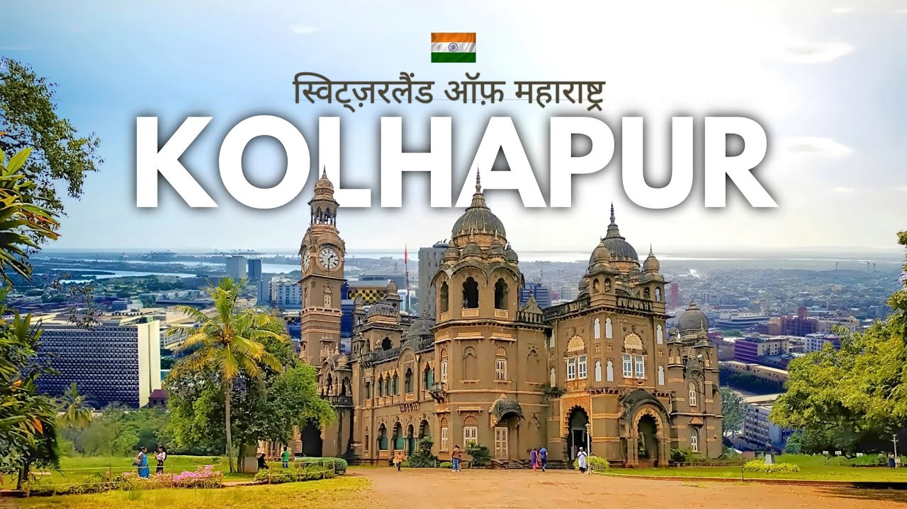

The Land of Diversity
Maharashtra offers a perfect blend of history, nature, adventure, and culture
Experience the Heart of India
Maharashtra, located in the western part of India, is a state that boasts an incredible diversity of landscapes, cultures, and experiences. From the bustling metropolis of Mumbai to the serene beaches of Konkan, from the ancient caves of Ajanta and Ellora to the hill stations of the Western Ghats, Maharashtra has something for every traveler.
The state's rich history is evident in its numerous forts, palaces, and UNESCO World Heritage Sites, while its natural beauty shines through in its national parks, waterfalls, and scenic landscapes. Maharashtra's vibrant culture, delicious cuisine, and warm hospitality make it a must-visit destination.
Explore Regions
Explore the Regions
Discover the diverse landscapes and unique experiences each region offers
 Beaches
Beaches
Konkan Coast
The pristine coastline of Maharashtra stretches over 720km, offering beautiful beaches, coconut groves, and delicious seafood. Explore the untouched beaches of Tarkarli, the historic Sindhudurg Fort, and the famous Ganpatipule temple.
- Pristine beaches
- Fresh seafood cuisine
- Water sports activities
 Hills
Hills
Western Ghats
A UNESCO World Heritage Site, the Western Ghats are home to lush green hills, waterfalls, and biodiversity hotspots. Visit popular hill stations like Mahabaleshwar, Lonavala, and Matheran, or explore the wildlife sanctuaries.
- Scenic hill stations
- Trekking trails
- Wildlife sanctuaries
 Wildlife
Wildlife
Vidarbha
Known for its tiger reserves, ancient temples, and orange orchards, Vidarbha offers a unique blend of nature and culture. Visit Tadoba-Andhari Tiger Reserve, the Deekshabhoomi in Nagpur, and the Ramtek Temple.
- Tiger reserves
- Historical temples
- Tribal culture
Must-Visit Places
Discover the iconic destinations that showcase Maharashtra's beauty and heritage
 UNESCO Site
UNESCO Site
Ajanta Caves
The Ajanta Caves are 30 rock-cut Buddhist cave monuments dating from the 2nd century BCE to about 480 CE. The caves include paintings and rock-cut sculptures described as among the finest surviving examples of ancient Indian art.
Read More Metropolis
Metropolis
Mumbai
India's financial capital, Mumbai is a bustling metropolis that never sleeps. Visit the Gateway of India, Marine Drive, Elephanta Caves, and the many museums and art galleries. Experience the vibrant street food and Bollywood culture.
Read More Cultural Hub
Cultural Hub
Pune
Known as the cultural capital of Maharashtra, Pune is home to historical landmarks like Shaniwar Wada, Aga Khan Palace, and Sinhagad Fort. The city blends tradition with modernity and is a major educational and IT hub.
Read More Hill Station
Hill Station
Mahabaleshwar
One of the most popular hill stations in Maharashtra, Mahabaleshwar is known for its strawberry farms, scenic viewpoints, and pleasant climate. Visit Venna Lake, Arthur's Seat, and the many waterfalls in the area.
Read More Beach Town
Beach Town
Ratnagiri
Famous for its Alphonso mangoes, Ratnagiri offers beautiful beaches, historic lighthouses, and the Thibaw Palace. The town is a perfect getaway for those seeking peace by the Arabian Sea.
Read More Wildlife
Wildlife
Chandoli National Park
Spread over the Sahyadri range, Chandoli National Park is known for its diverse flora and fauna. The park offers opportunities for wildlife spotting, trekking, and enjoying scenic landscapes.
Read MoreTour Packages
Curated experiences for every type of traveler
 Top Rated
Top Rated
Mumbai City Tour
- 3 Days / 2 Nights
- Gateway of India
- Marine Drive
- Juhu Beach
- Bollywood Studio Tour
 UNESCO Site
UNESCO Site
Ajanta & Ellora Caves
- 4 Days / 3 Nights
- Ajanta Caves
- Ellora Caves
- Daulatabad Fort
- Entry Tickets Included
 Nature Lover
Nature Lover
Mahabaleshwar Getaway
- 3 Days / 2 Nights
- Scenic Viewpoints
- Boating & Trekking
- Panchgani Tour
- Local Food Tour
 Weekend Trip
Weekend Trip
Lonavala & Khandala
- 2 Days / 1 Night
- Bushi Dam
- Tiger Point
- Wax Museum
- Local Market
 Luxury
Luxury
Nashik Wine Tour
- 2 Days / 1 Night
- Vineyard Visit
- Wine Tasting
- Food Pairing
- Boutique Stay
 Beachside
Beachside
Alibaug Beach Retreat
- 3 Days / 2 Nights
- Beach Activities
- Fort Visit
- Campfire Night
- Private Cottage
 Family Friendly
Family Friendly
Panchgani Strawberry Tour
- 2 Days / 1 Night
- Strawberry Picking
- Table Land
- Scenic Valley Views

SpiritualKolhapur Heritage Tour
- 3 Days / 2 Nights
- Mahalaxmi Temple Visit
- Historical Museum
- Cultural Walk Tour
- Traditional Kolhapuri Meal
 Best Seller
Best Seller
Heritage Explorer
- 7 Days / 6 Nights
- Ajanta & Ellora Caves
- Daulatabad Fort
- Bibi Ka Maqbara
- Guided Cultural Tours
 Family Favorite
Family Favorite
Konkan Coastal Retreat
- 5 Days / 4 Nights
- Tarkarli Beach
- Sindhudurg Fort Visit
- Malvan Cuisine Tasting
- Dolphin Watching
 Adventure
Adventure
Western Ghats Adventure
- 8 Days / 7 Nights
- Trekking & Rappelling
- Mahabaleshwar Visit
- Hilltop Camping
- Local Jungle Safari
 Wildlife
Wildlife
Tiger Trail Safari
- 6 Days / 5 Nights
- Tadoba National Park
- Pench Tiger Reserve
- 4 Jungle Safaris
- Nature Photography Sessions
Culture & Heritage
Experience the rich cultural tapestry of Maharashtra

Vada Pav
The quintessential Mumbai street food, vada pav consists of a deep-fried potato dumpling placed inside a bread bun with chutneys. Often called the "poor man's burger," it's a flavorful and filling snack.

Puran Poli
A sweet flatbread stuffed with a mixture of jaggery and lentils, puran poli is a festive delicacy. It's especially prepared during Gudi Padwa (Maharashtrian New Year) and Holi.

Misal Pav
A spicy curry made of sprouted moth beans, topped with farsan, onions, lemon and coriander, served with pav bread. It's a popular breakfast dish with regional variations across Maharashtra.

Chhatrapati Shivaji Maharaj
The founder of the Maratha Empire, Shivaji Maharaj is revered for his military genius, progressive governance, and establishment of Swarajya. His forts and legacy are integral to Maharashtra's identity.

Ellora Caves
A remarkable complex of 34 rock-cut temples representing Buddhist, Hindu and Jain traditions, dating from 600-1000 CE. The Kailasa Temple, carved from a single rock, is an architectural marvel.

Kolhapuri Chappal
Traditional handcrafted leather slippers originating from Kolhapur, known for their durability and intricate designs. These have received Geographical Indication status, protecting their authenticity.

Gudi Padwa
The Maharashtrian New Year marks the beginning of spring and harvest season. Homes are decorated with rangoli, a gudi (flag) is hoisted, and families enjoy festive meals with puran poli and shrikhand.

Ganesh Chaturthi
Maharashtra's grandest festival celebrates the birth of Lord Ganesha with elaborate pandals, cultural performances, and processions. The immersion (visarjan) in Mumbai attracts millions of devotees.

Pola Festival
A unique festival where bulls and farm animals are worshipped by farmers. The animals are bathed, decorated with ornaments, and taken out in processions to thank them for their contribution to agriculture.
Adventure Activities
Thrilling experiences for adventure enthusiasts

Fort Trekking
Maharashtra's Sahyadri range is dotted with historic forts offering challenging treks. Popular routes include Harishchandragad, Rajgad, Sinhagad, and Torna. Experience breathtaking views and explore ancient fortifications.
Explore Treks
Scuba Diving
Discover the underwater world of the Konkan coast with scuba diving at Tarkarli and Malvan. Explore coral reefs, spot colorful fish, and experience the thrill of diving in the Arabian Sea with certified instructors.
Dive Locations
Rappelling & Rock Climbing
Test your limits with rappelling down waterfalls and rock climbing in the Western Ghats. Popular spots include Kalsubai (highest peak in Maharashtra), Bhimashankar, and Thoseghar Waterfalls.
Adventure Camps
Explore Maharashtra
Plan your journey across this diverse state
Key Regions
- Konkan: Coastal region with beaches and seafood cuisine
- Western Maharashtra: Pune, Satara, Kolhapur - cultural heartland
- Marathwada: Aurangabad region with historical sites
- Vidarbha: Eastern region with tiger reserves and oranges
- Khandesh: Northern region with tribal culture
Travel Tips
- Best time to visit: October to March (pleasant weather)
- Monsoon (June-Sept) is great for lush landscapes and waterfalls
- Road trips along the Mumbai-Goa highway are spectacular
- Try local transport like ST buses for authentic experience
- Carry light cotton clothes for summers, jackets for winters
Traveler Stories
What our visitors say about their Maharashtra experience